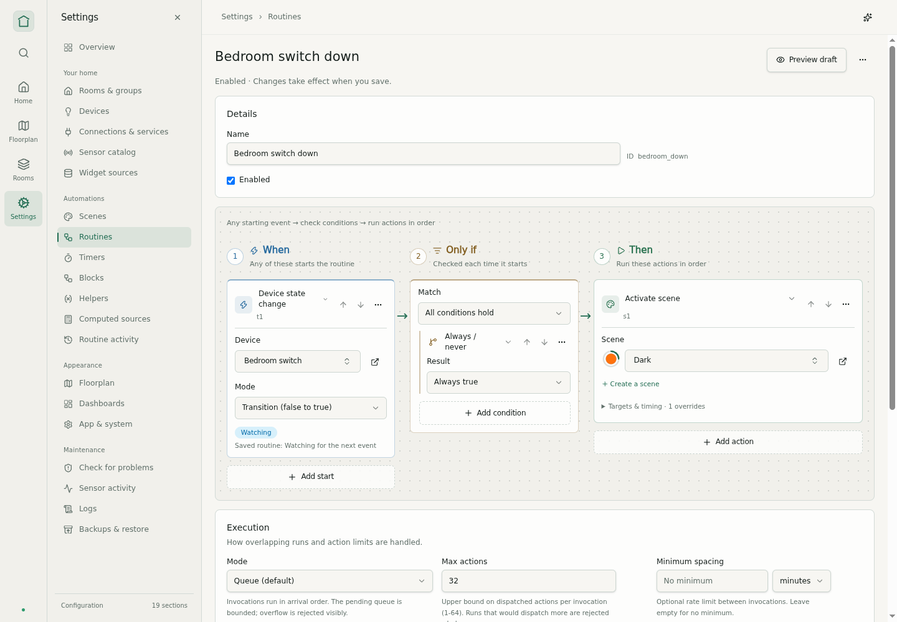
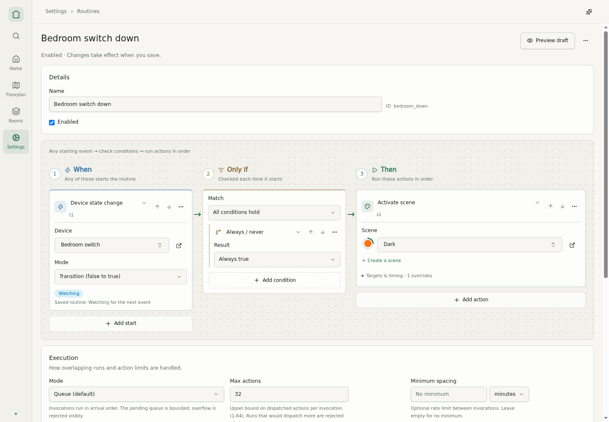
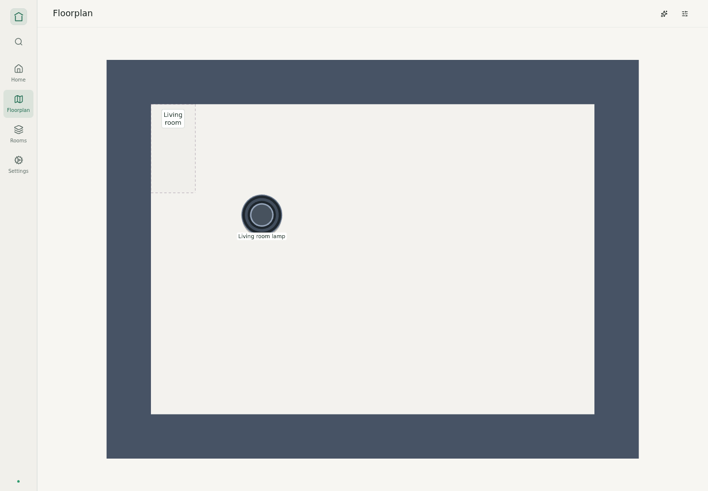
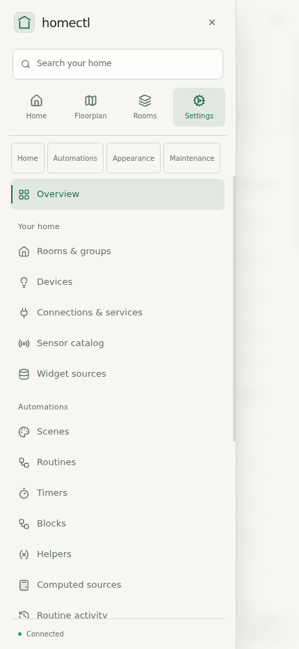
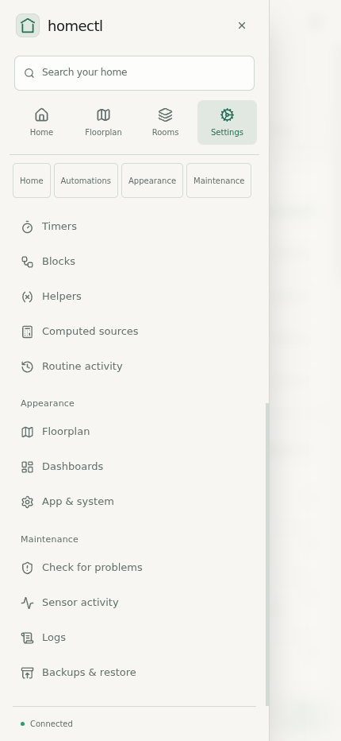
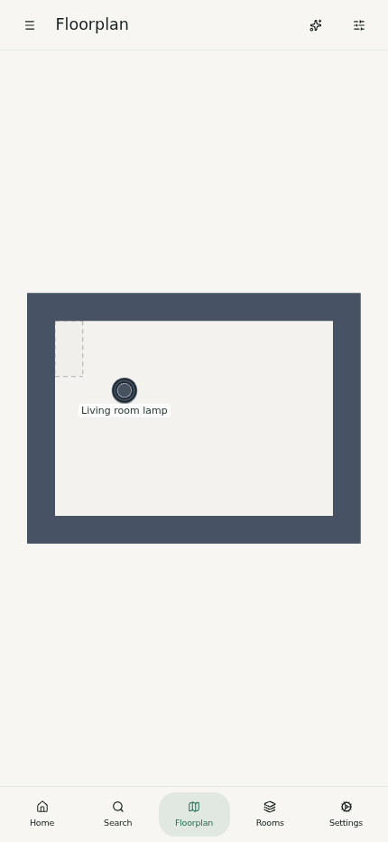
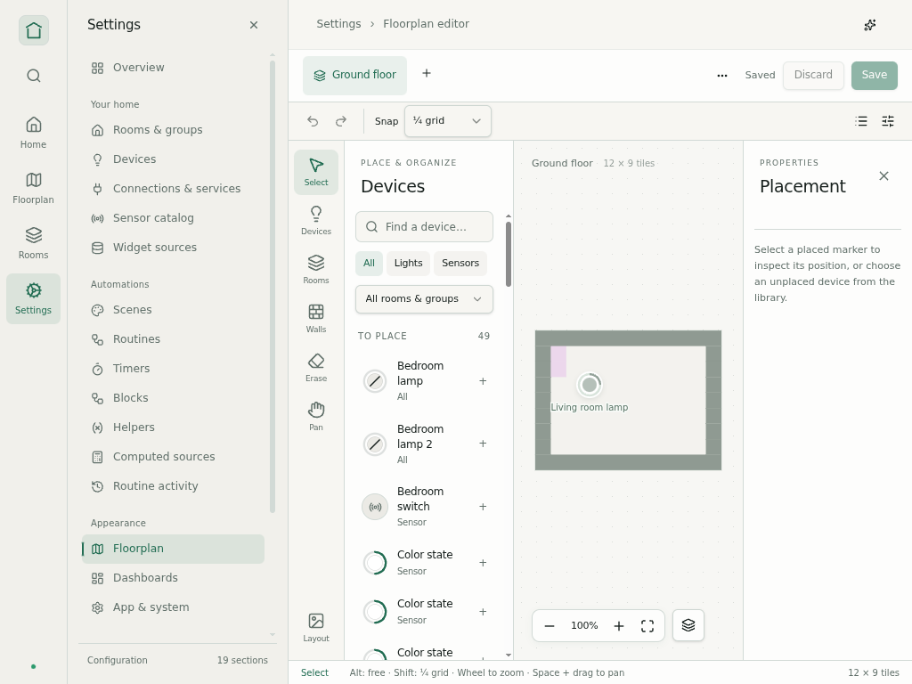
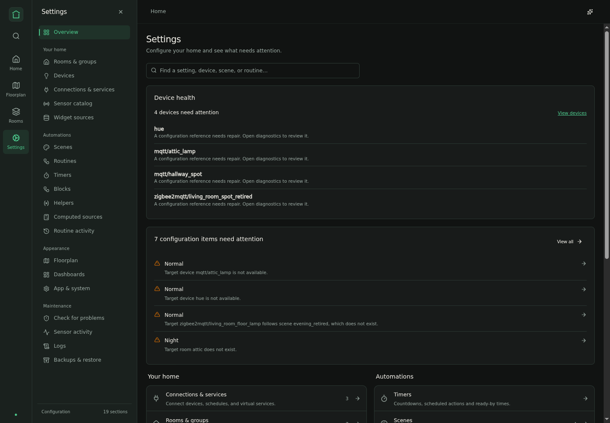

Compact rail + settings panel
Approved B, implemented with open/closed states and no pinning. Settings opens its panel; other application areas show only the rail. Screenshots use isolated synthetic fixtures.
Behavior and verification · Original concept comparison
Approved direction and production implementation



Open and closed




Phones






Smaller desktop and dark theme



